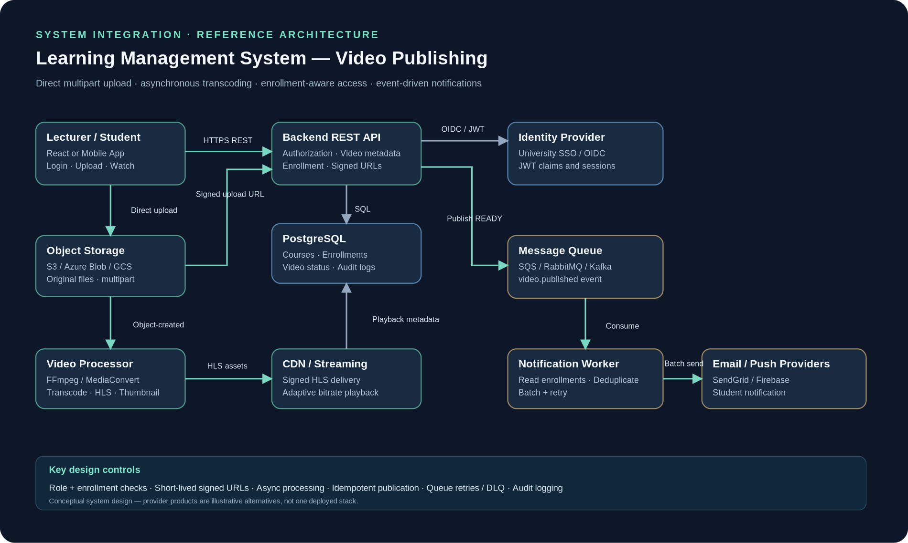
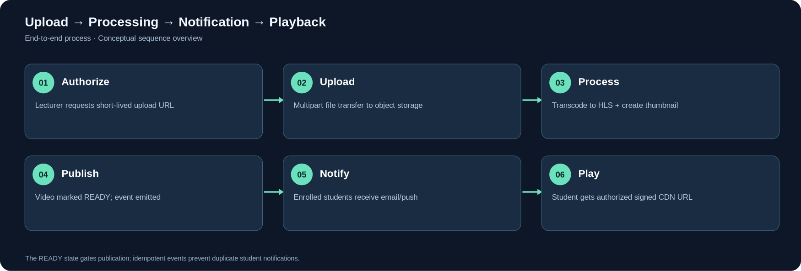

Learning Management System:
Video Upload & Notifications
A structured API and integration design for university lecture videos: secure publishing, resilient large-file uploads, adaptive streaming and automated notifications to enrolled students.
Replace fragmented sharing with an authorized learning platform.
Problem
Lecturers share recordings over WhatsApp groups and email links. Students can lose access to important lessons, and institutions lack organized, enrollment-based content control.
Requirements
Lecturers upload, view and delete their own course videos. Only enrolled students can view recordings. New videos generate notifications. Large files upload reliably and stream on slow networks.
Separated responsibilities, explicit integrations.

Illustrative technologies: React/mobile; Node.js, Django or Spring backend; university SSO/Keycloak/Auth0; PostgreSQL; S3/Azure Blob/GCS; FFmpeg/MediaConvert; CloudFront/Cloudflare; SQS/RabbitMQ/Kafka; SendGrid/Firebase/Twilio. Alternatives, not an asserted single deployed stack.
Core endpoints & access rules
| Method | Endpoint | Authorized role | Responsibility |
|---|---|---|---|
| POST | /courses/{id}/videos/upload-url | Lecturer teaching the course | Authorize & return short-lived pre-signed upload URL |
| POST | /courses/{id}/videos | Lecturer teaching the course | Confirm upload and save video metadata |
| GET | /courses/{id}/videos | Lecturer / enrolled student | List course videos |
| GET | /videos/{id}/stream | Lecturer / enrolled student | Return signed CDN streaming URL |
| DELETE | /videos/{id} | Lecturer owner / admin | Delete or retire video according to retention policy |
JWT/OIDC identifies the principal. The backend must also verify course ownership and current enrollment against authoritative data; client-provided roles are not sufficient.
From upload to notification

Lecturer logs in via university SSO / OIDC; backend validates identity and roles.
Backend verifies course ownership, then issues a short-lived pre-signed URL.
Browser sends large video to storage through resumable multipart upload.
Storage event starts transcoding to multiple resolutions, thumbnail and HLS playlists.
Backend updates video metadata to READY and publishes video.published.
Worker obtains enrolled students, batches messages, applies retries and idempotency.
Student opens link; backend checks enrollment and returns a signed CDN URL.
Owner/admin deletes; backend coordinates metadata, storage and cached assets.
Decisions & controls
Expected outcomes — not measured
- Fewer lost or inaccessible recordings through course-level organization.
- Students can view lessons only after enrollment validation.
- Faster playback startup and adaptive resolution on slower connections.
- Notifications are dispatched after a recording becomes playable.
Possible next iterations
- Progress tracking and resume playback.
- Q&A and contextual comments.
- Auto-generated captions with speech-to-text.
- Zoom / Teams recording import.
- Student information system enrollment synchronization.
Design questions to resolve before delivery: deletion vs. restoration policy, preferred notification channels, retry and retention policies, accessibility requirements, and target SLAs.